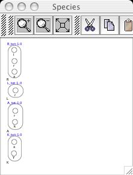

There are several ways to create species from valid molecule types. Molecules can be dragged and dropped from either the Editor Window or from the Molecule Templates Palette to the Species Palette, or a molecule on the Editor Window can be selected to bring up popup menu options Rename, Delete, Create Molecule Type and Make Into Species. The Make Into Species option should then be selected.
Any of these actions brings up the Initial Concentration Dialog box to allow for input of a parameter name and value for the initial concentration of the species. The molecule, along with its concentration data, is then automatically registered as a valid species and will appear in the Species Palette window. For molecule R(l,r,a) we give these values as R_tot and 1.0 and are then able to see the registration.
The remaining molecules are similarly added as species, with help from the autozoom button feature on the Species Palette to zoom out the focus as more and more species are added.